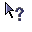

Context-sensitive Help
1 Context-sensitive Help overview
2 Help content configuration
3 Context-sensitive Help integration
3.1 Registering Menu items
4 Notes
5 See Also
2 Help content configuration
3 Context-sensitive Help integration
3.1 Registering Menu items
4 Notes
5 See Also
The context-sensitive help allows to go to an article in the help system by clicking on a component in the GUI. The Help content allows to specify IDs which will be used to link the elements in the GUI where the user will click to their corresponding articles and titles.
It is possible to exit the Context-sensitive help by either:
The help topics IDs must be defined in the Help content configuration. For example:
Context-sensitive Help overview
To use the Context-sensitive help:- The user click on the button to call the context-sensitive help (by default the button has this icon: )
- The pointer changes to a new shape (by default the shape will be:  )
- If the user now left click on a component which has an associated helpID, then the Help window appear on the associated article and title
It is possible to exit the Context-sensitive help by either:
- Typing the escape key
- Right clicking anywhere on the application
Help content configuration
Main Article: Help content configuration
The help topics IDs must be defined in the Help content configuration. For example:
<helpContent> <ref id="button1" article="button 1" /> <ref id="button2" article="button 2" /> <ref id="button3" article="several components" title="button 3" /> <ref id="textfield" article="several components" title="text field" /> <ref id="panel" article="several components" title="panel"/> </helpContent>In this example, the "button1" ID links to the article with the name "button 1". The "textfield" ID links to the title "text field" in the article "several components". Note that as for references, you don't need to type the exact name for the title and the article: See naming constraints.
Context-sensitive Help integration
To integrate the context-sensitive help, you must:- First have a Help component and window (see DocGenerator Help feature)
- Register the components which will be associated with a help topic, by calling
HelpContentViewer.registerContextHelp(helpID, component) - Create a context-sensitive help button, by calling
HelpContentViewer.createContextHelpButton()
This is only necessary if some of the components you add are not in any window when you register them
, by calling: HelpContentViewer.registerContextHelpWindow(window);
Registering Menu items
It is possible to register Menu items as for any GUI component[2]
The functionality only work for the moment in Swing
. in this case, clicking on the parent Menu will open the menu if it is not already registered for the Help system, and clicking on a Menu item registered with the help will show the associated article or title in the Help Window. Notes
See Also
- Help system: This article explains how to use the JavaHelp-like feature of the tool
- Help content configuration: This article explains how to configure the help content
×

Categories: javahelp